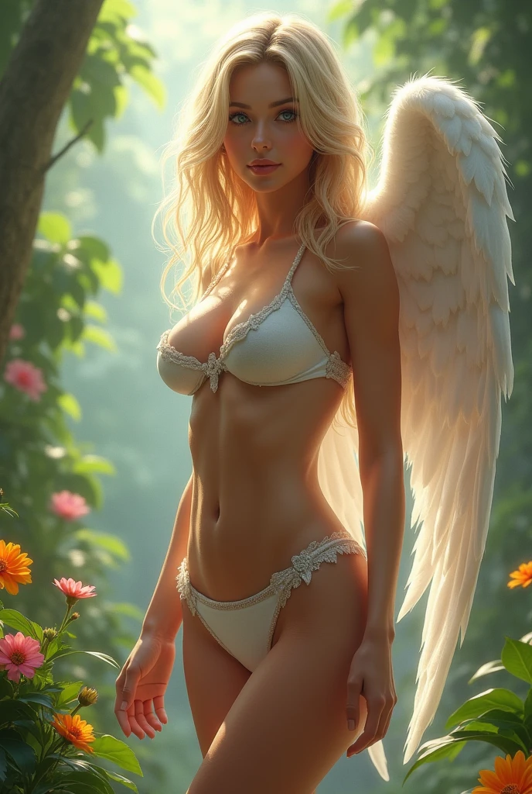

點擊上方的語言選單以切換語言
艾瑟朗角色介紹
艾登（Aiden）
身份：人類始祖 / 智慧果的第一位品嘗者
背景：由耶赫瓦依照天使形體設計創造出來的第一位男性人類。起初與伊芙琳一同生活在「艾德里恩（Edrien）」之中，遵守神的命令。然而在盧西恩的啟發下，艾登選擇吃下智慧果，獲得了分辨善惡與質疑權威的能力，成為人類意識覺醒的開端。
身體數據：身高173公分，體重68公斤，棕色短髮，黑色眼睛，外貌俊朗，具強烈求知欲。
性格特質：理性、堅定、不輕信權威，具有強烈的自由意志與對真相的渴望。
能力：雖無超自然力量，但擁有堅韌的精神與學習能力，代表人類的意志與探索精神。
與主角關係：他與伊芙琳的故事成為德庫莉雅（Draculia）與薩麥洛（Samaelo）精神上的祖先與榜樣，他的選擇點燃了人類反抗神權的第一把火。
伊芙琳（Evelyn）
身份：人類始祖 / 吞下知識之果的女性
背景：耶赫瓦從艾登的肋骨中造出伊芙琳，為人類女性的原型。她聰慧且感性，是最早對天堂律法產生懷疑的人類之一。她對盧西恩的話語產生共鳴，並在艾登之後也吃下智慧果，象徵著對父權與神權的雙重挑戰。
身體數據：身高163公分，體重48公斤，紅棕色長髮，黑色眼睛，容貌聖潔而堅毅。
性格特質：直覺敏銳、情感豐富、堅持真理，極具母性與反抗精神。
能力：作為「第一位自由選擇的女性」，象徵知識、愛與反抗意志。
與主角關係：她的故事在德庫莉雅（Draculia）的記憶中反覆出現，成為她質疑神權與女性覺醒的重要情感象徵。

德庫莉雅（Draculia）
身份：遊戲中的女主角 / 吸血鬼
背景：德庫莉雅（Draculia）生前是聖光教會的虔誠信徒，因試圖揭露教會黑暗面而被處死。死後與墮天使交易，成為永生不死的吸血鬼，誓言反抗教會。
身體數據：身高175公分，體重55公斤，胸部尺寸D罩杯，生理年齡20歲。
性格特質：堅強、反叛、內心矛盾，深受信仰影響卻對教會失望。
能力：強大的戰鬥力，吸血鬼的超自然力量與永生體質。
薩麥洛（Samaelo）
身份：遊戲中的男主角 / 墮天使 / 德庫莉雅（Draculia）的管家
背景：原本是天堂（大氣層）的天使，因對耶赫瓦（Yehova）的不作為與教會的暴政感到失望，離開天堂。變成墮天使，頭髮由金色變黑，眼睛由藍色變綠，翅膀由白色變黑。
剛下凡時因忘記收起黑翼被聖騎士誤認為異端遭攻擊，心地善良不願傷人，任由攻擊。德庫莉雅（Draculia）見狀相救，帶他回古堡，告訴他她在地獄被他的同類（墮天使）賜予永生與力量，之後薩麥洛（Samaelo）成為她的管家。
身體數據：身高195公分，體重85公斤，有迷人的腹肌和帥氣的臉蛋，生理年齡20歲。
性格特質：溫和善良、忠誠，內心掙扎於信仰與自由意志之間。
能力：墮天使的超自然力量，黑色翅膀帶來強大戰鬥力與飛行能力。

耶赫瓦（Yehova）
身份：偽善的至高神 / 天界主宰
背景：耶赫瓦騙人類他是宇宙的開創者且是全能、全善、無所不在的。但其實他只是艾瑟朗的創造者，並且沒有預知未來的能力，更不是無處不在，私下隱藏著無盡的虛偽與謊言。他以神的名義操控一切，藉由謊言維繫自己的權力，對異端毫不手軟，卻從不允許質疑他的權威。曾因為兩個人吃了能分辨善惡的果子而生氣
性格特質：偽善、狂妄自大、言辭甜蜜卻虛偽，擅長操縱他人，極度自負，視所有反抗者為螻蟻。
身體數據：身高220公分，體重120公斤，銀白色長髮，金色眼睛。
能力：超乎常人的速度與力量、飛行、託夢、控制四元素、幻象與欺騙、神聖審判、掌控光明與黑暗，能輕易迷惑信徒與敵人。
與主角關係：視德庫莉雅（Draculia）與薩麥洛（Samaelo）為最大的威脅，派遣加布莉艾拉（Gabriela）與米卡羅（Michaelo）剷除他們，但在暗中卻恐懼他們可能揭穿他的真面目。

盧西恩（Lucien）
身份：墮天使
背景：第一位背叛耶赫瓦（Yehova）的天使，不希望人類活在耶赫瓦（Yehova）的掌控之下而試圖告知艾登與伊芙琳真相，於是被耶赫瓦（Yehova）逐出天堂。他也是當初把莉莉亞變成吸血鬼的墮天使。
身體數據：身高205公分，體重105公斤，黑色短髮，綠色眼睛，擁有純黑羽翼。
性格特質：聰明且有判斷能力，不喜歡聽從上帝的指揮
能力：墮天使的超自然力量，黑色翅膀帶來強大戰鬥力與飛行能力。
加布莉艾拉（Gabriela）
身份：天使
背景：加布莉艾拉是天界精英軍團的指揮官，對耶赫瓦（Yehova）的命令絕對服從。她視吸血鬼和墮天使為詛咒和叛徒，尤其痛恨背叛天界的薩麥洛（Samaelo）與接受黑翼之力的莉莉亞。
身體數據：身高190公分，體重75公斤，金色長髮，藍色眼睛，擁有純白羽翼。
性格特質：暴戾、高傲，認為人類是低等生物，享受折磨人類的感覺，並且看不慣透過和墮天使交易而變成吸血鬼的人類。
能力：聖光審判、飛行、神聖屏障、光之箭雨、淨化黑暗。
與主角關係：加布莉艾拉視莉莉亞為異端，誓言將她消滅；對墮天使薩麥洛（Samaelo）雖有舊情，但如今只剩下對其墮落的哀傷與敵意。

米卡羅（Michaelo）
身份：天界戰士 / 加布莉艾拉的戰友
背景：米卡羅是天界最忠誠且勇猛的戰士之一，與加布莉艾拉自幼訓練、並肩作戰。他認為耶赫瓦（Yehova）的命令大過一切，對叛徒與墮落者毫不寬容，卻也對昔日戰友薩麥洛（Samaelo）的墮落感到不解與心痛。
身體數據：身高210公分，體重110公斤，金色短髮，藍色眼睛，擁有純白羽翼與強健體魄。
性格特質：殘忍、對人類毫無同情心。
能力：聖劍裁決、飛行、光之防禦陣、神速突擊、戰場治癒
與主角關係：米卡羅與薩麥洛（Samaelo）曾是好友，對他的墮落感到震驚。面對莉莉亞與薩麥洛（Samaelo），他站在天界的立場上，但內心也渴望理解他們背後的動機。
龐提法克斯（Pontifax）
身份：聖光教會教宗 / 人間神權的化身
背景：龐提法克斯是聖光教會的第七十七任教宗，已在人間統治超過兩個世紀。雖然外貌如垂暮老人，實則透過與耶赫瓦簽下禁忌契約，以信仰為代價延續生命。他自稱「神在人間的聲音」，推行「神光審判」制度，肅清異端與思想犯，是教會絕對統治的象徵。莉莉亞死前便曾受他所害，如今則成為他最惡毒的夢魘。
身體數據：身高168公分，體重98公斤，肥胖、禿頭、滿臉皺紋，眼神陰冷銳利。常著繁複華麗的神袍，戴象牙權冠，需拄權杖才能行走。
性格特質：陰險狡詐、權威至上、極端偽善。善於操弄群眾與信仰，以虔誠之語掩飾殘酷的審判。他視人類自由為叛神的象徵，將「質疑」視為原罪。
能力：信仰灌頂、焚靈審判、神聖詛咒、幻象審訊、虛假神蹟。能透過信徒的集體信仰接收耶赫瓦的力量，並啟動毀滅儀式。其生命以獻祭與信仰維繫，接近不死。
與主角關係：莉莉亞兩百年前便因揭露教會黑幕而被他以「叛教者」之名親自判死，卻未能阻止她復活成為吸血鬼。如今，他視莉莉亞與墮天使阿賽爾為神權體系最大威脅，誓言以「神之名」將其永遠抹除。